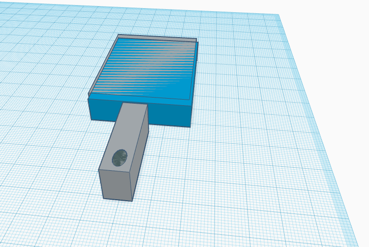
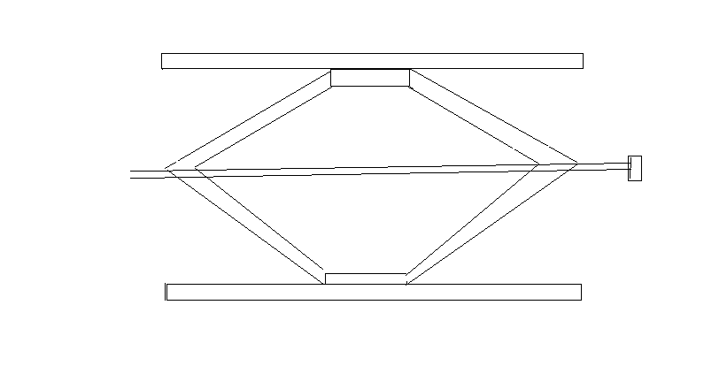
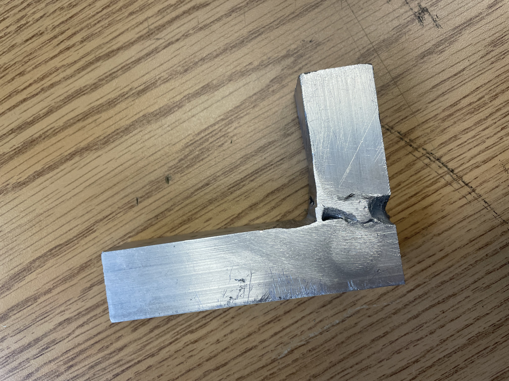
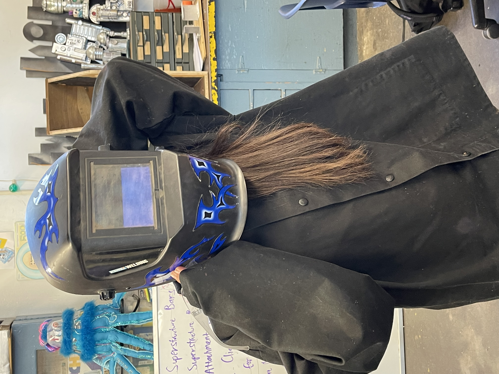
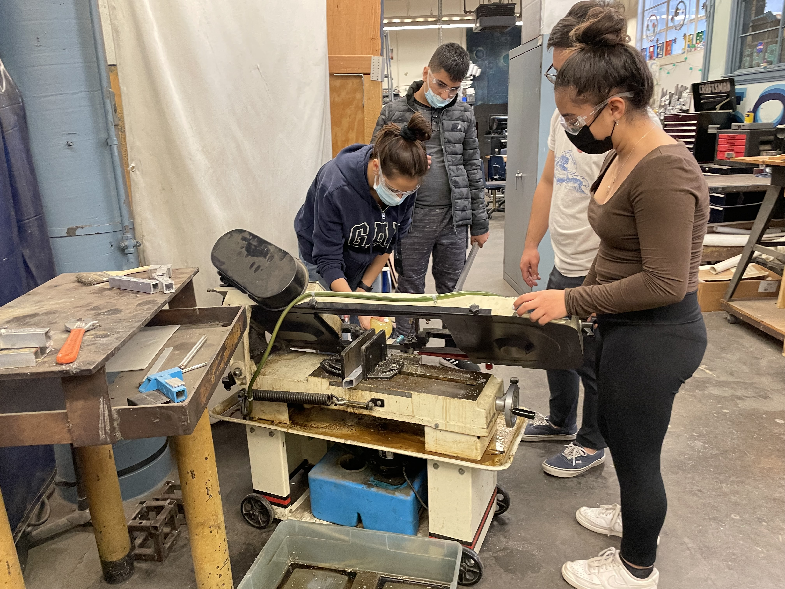
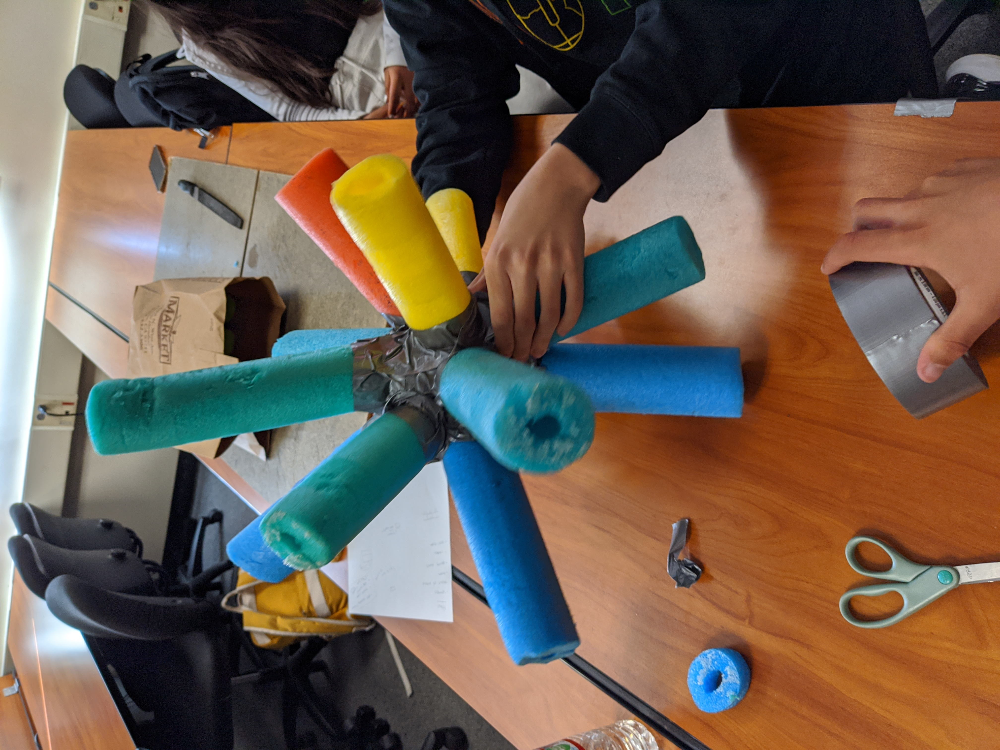
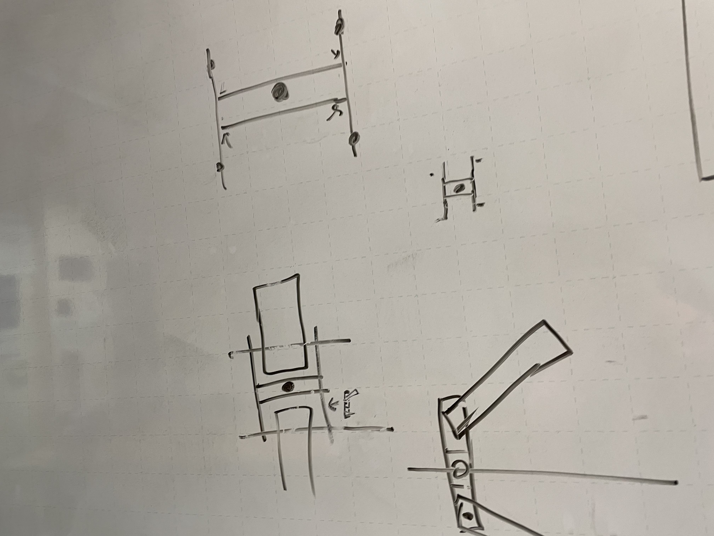
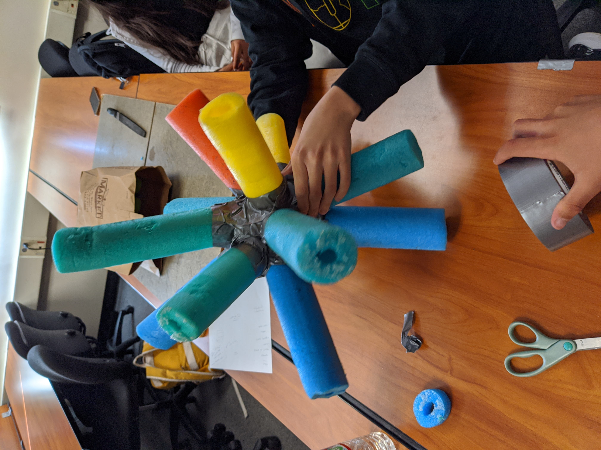
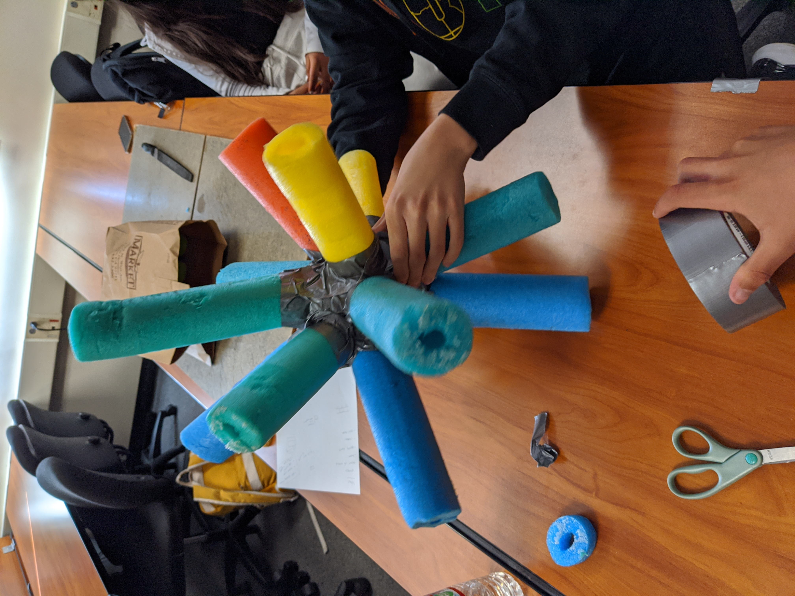

What did we do this week?
This week we had designed robots on tinkercad to drive and complete the course. Afterwards we presented our ideas, however
mine was just sticks at the moment. On Thursday
we tried building a technology that can grad golf balls
and transport them. Today, Friday we are working on our wesites
1/21/2022 This week I had started to think about my project idea for towards the end of the year. On Thursday we did a Wensday
challenge which is now called Thursday
challenges. This week we were supposed to design a promtional
thing to help advertise CVHS falkons robotics. Today we will continue to work on our websites and then build on our project idea.
Our "advertisment" idea
1/28/2022
This week I was in quarintine until Wednesday, however I still worked on my project design
at home. On Wednesday we continued to work on our project, and Thursday we did a Wednesday challenge.
We had a team building activity where we had to pass plastic tubes to eachother with one hand. Today we are working on our website then, later on
we will continue working on our project. So far my project is stll in its designing
phase.

2/4/2022
This week we had completed various assignments and challenges. On Monday we had worked on our projects, and extended our designs. On Tuesday we
had learned about bioengineering and how it affects the enviornment. Later on, this week on Wednesday we took a look at the, "Trolly problem." On Thursday we had a critical thinking Thursday challenge, where we had
created a solution to for a problem at our school with our classmates.We eventually thought of different ways to solve the long lunch lines problem.
Today we re updating our websites and continue to work on our project designs.
2/11/2022
This week we had taken our projects one step further, and started getting a list of materials to order. I'm wrapping up my project and finally getting somewhere with it.
In my opinion, the most exciting day of the week would have been Thursday where we got to tryout welding. We got to learn how to weld and the dangers of it. However, it was a super fun experience and I'm hoping we will be able to give
it a try again next week; and take pictures this time.

2/24/22
For the past two weeks we have been working in the Robotics room. We had welded on metal and created the first letter of our name. Later on we grinded it off with a machine.
First we had maped out the measurments for our letter then cut the metal. Afterwards we welding the peices of metal together. Lastly we grinded the extra pieces off. This was overall lots of fun!



3/4/22
This week I finally finished my list of materials I need to order for my project. I just have to figure out how my motor is going to work.
3/25/22
This week we had a vister who told us about how he engineered a device for people with tremor to be able to drink from a mug. We also attempted to create certain designs for freeways that are most convient. Last, last Fridays we did an egg drop challenge which was really interesting. We also learned about safety. 
4/1/22
This week we have starting physically building our design projects, and many of our things we ordered have arrived. I finally worked out my measurments throughout the entire project, and need to start actually making it. This week was pretty fun/chill, and it was nice to actually start making what we were planning. I am excited
to try welding part of my project soon.

4/8/22
This week I started to slowly build and have fun with my project. On Monday and Tuesday I mapped out what I needed to do then, on Wensday I had
cut a part of my metal piece with the machine in the robotics room. On Thursday we continued with our projects in the robotics room, and today we are both updating our webites then continuing to work on our projects.
4/14/2022
This week we started off by cleaning the robotics room. The rest of the week we continued to work on our projects and I had started to weld.
On Thursday I got to cut my new pieces of metal and today I would like to weld the metal pieces together.
4/22/2022
This week I basically finshed welding. Yesterday we built boats with only 2 pieces of paoer, and sadly lost. RIP boat LAW. We are cleaning today.
4/29/22
This week we had went to the robotics room where I actually finished my welding, and grinding. Now I get to start to put my parts together. For our thursday challenge this week I got parterned up with Eric, where we we're challenged to
make a tool which would take a waterballon across 100 meters. However, Eric's and my invention didn't make it to the finish line. We ended up combining ours and Mr.Poole's projects together to actually make it possible to compete. Lastly,
today we are updating our websites which I am doing currently, and cleaning up the shop.
5/6/22
On Monday we spent time in class watching videos due to AP testing occupying the robotics room. On Tuesday and Wensday we were in the roboics room where I took an entire class time trying to put a whole in a piece of metal. On Thursday we did another Thursday challenge counting and competing with the number of Doors vs Wheels. Sadly, team doors won by over 2,000.
Today, (Friday) we are updating websites and cleaning up the shop.

 
